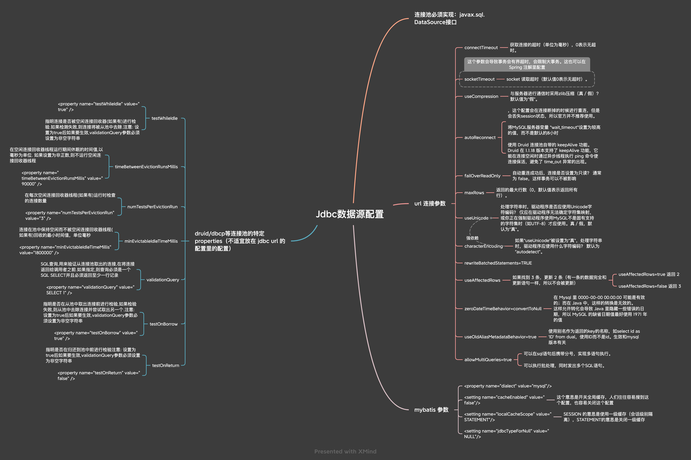

JDBC URL参数解析
参考《mysql JDBC URL参数解析》

JDBC数据源配置.xmind
jdbc 调用层次
在创建事务的时候，调用 createTransaction 会先 getConnection。一开始的时候先试用发出两条语句：select 1;set autocommit=1;测试连接可用性。
1
2
3
4
5
6
7
8
9
10
11
| 2 = {StackTraceElement@24652} "com.mysql.jdbc.MysqlIO.sqlQueryDirect(MysqlIO.java:2683)"
3 = {StackTraceElement@24653} "com.mysql.jdbc.ConnectionImpl.execSQL(ConnectionImpl.java:2482)"
4 = {StackTraceElement@24654} "com.mysql.jdbc.ConnectionImpl.execSQL(ConnectionImpl.java:2440)"
5 = {StackTraceElement@24655} "com.mysql.jdbc.StatementImpl.executeInternal(StatementImpl.java:845)"
6 = {StackTraceElement@24656} "com.mysql.jdbc.StatementImpl.execute(StatementImpl.java:745)"
7 = {StackTraceElement@24657} "gdt.di.jdbc.DiStatementImpl.execute(DiStatementImpl.java:93)"
8 = {StackTraceElement@24658} "com.zaxxer.hikari.pool.PoolBase.isConnectionAlive(PoolBase.java:169)"
9 = {StackTraceElement@24659} "com.zaxxer.hikari.pool.HikariPool.getConnection(HikariPool.java:186)"
10 = {StackTraceElement@24660} "com.zaxxer.hikari.pool.HikariPool.getConnection(HikariPool.java:162)"
11 = {StackTraceElement@24661} "com.zaxxer.hikari.HikariDataSource.getConnection(HikariDataSource.java:100)"
12 = {StackTraceElement@24662} "io.ebeaninternal.server.transaction.TransactionFactoryBasic.createTransaction(TransactionFactoryBasic.java:43)"
|
sendCommand 的 queryPacket 参数就是二进制的命令。
接下来会 bind 一个 prepareStatement：
1
2
3
4
5
6
7
| 0 = {StackTraceElement@24844} "java.lang.Thread.getStackTrace(Thread.java:1564)"
1 = {StackTraceElement@24845} "gdt.di.jdbc.DiPreparedStatementImpl.<init>(DiPreparedStatementImpl.java:40)"
2 = {StackTraceElement@24846} "gdt.di.jdbc.DiEnhancer.wrap(DiEnhancer.java:73)"
3 = {StackTraceElement@24847} "gdt.di.jdbc.DiConnectionImpl.prepareStatement(DiConnectionImpl.java:125)"
4 = {StackTraceElement@24848} "com.zaxxer.hikari.pool.ProxyConnection.prepareStatement(ProxyConnection.java:372)"
5 = {StackTraceElement@24849} "com.zaxxer.hikari.pool.HikariProxyConnection.prepareStatement(HikariProxyConnection.java)"
6 = {StackTraceElement@24850} "io.ebeaninternal.server.persist.dml.InsertHandler.getPstmt(InsertHandler.java:112)"
|
真正执行 sql 的时候，execute 的栈帧是这样的：
1
2
3
4
5
6
7
8
9
10
| 0 = {StackTraceElement@25257} "java.lang.Thread.getStackTrace(Thread.java:1564)"
1 = {StackTraceElement@25258} "com.mysql.jdbc.PreparedStatement.executeInternal(PreparedStatement.java:1858)"
2 = {StackTraceElement@25259} "com.mysql.jdbc.PreparedStatement.executeUpdateInternal(PreparedStatement.java:2079)"
3 = {StackTraceElement@25260} "com.mysql.jdbc.PreparedStatement.executeUpdateInternal(PreparedStatement.java:2013)"
4 = {StackTraceElement@25261} "com.mysql.jdbc.PreparedStatement.executeLargeUpdate(PreparedStatement.java:5104)"
5 = {StackTraceElement@25262} "com.mysql.jdbc.PreparedStatement.executeUpdate(PreparedStatement.java:1998)"
6 = {StackTraceElement@25263} "gdt.di.jdbc.PreparedStatementWrapper.executeUpdate(PreparedStatementWrapper.java:35)"
7 = {StackTraceElement@25264} "com.zaxxer.hikari.pool.ProxyPreparedStatement.executeUpdate(ProxyPreparedStatement.java:61)"
8 = {StackTraceElement@25265} "com.zaxxer.hikari.pool.HikariProxyPreparedStatement.executeUpdate(HikariProxyPreparedStatement.java)"
9 = {StackTraceElement@25266} "io.ebeaninternal.server.type.DataBind.executeUpdate(DataBind.java:92)"
|
而检查错误的栈帧是：
1
2
3
4
5
6
7
8
9
10
11
12
13
14
15
| 0 = {StackTraceElement@25395} "java.lang.Thread.getStackTrace(Thread.java:1564)"
1 = {StackTraceElement@25396} "com.mysql.jdbc.MysqlIO.checkErrorPacket(MysqlIO.java:3976)"
2 = {StackTraceElement@25397} "com.mysql.jdbc.MysqlIO.checkErrorPacket(MysqlIO.java:3912)"
3 = {StackTraceElement@25398} "com.mysql.jdbc.MysqlIO.sendCommand(MysqlIO.java:2530)"
4 = {StackTraceElement@25399} "com.mysql.jdbc.MysqlIO.sqlQueryDirect(MysqlIO.java:2683)"
5 = {StackTraceElement@25400} "com.mysql.jdbc.ConnectionImpl.execSQL(ConnectionImpl.java:2486)"
6 = {StackTraceElement@25401} "com.mysql.jdbc.PreparedStatement.executeInternal(PreparedStatement.java:1858)"
7 = {StackTraceElement@25402} "com.mysql.jdbc.PreparedStatement.executeUpdateInternal(PreparedStatement.java:2079)"
8 = {StackTraceElement@25403} "com.mysql.jdbc.PreparedStatement.executeUpdateInternal(PreparedStatement.java:2013)"
9 = {StackTraceElement@25404} "com.mysql.jdbc.PreparedStatement.executeLargeUpdate(PreparedStatement.java:5104)"
10 = {StackTraceElement@25405} "com.mysql.jdbc.PreparedStatement.executeUpdate(PreparedStatement.java:1998)"
11 = {StackTraceElement@25406} "gdt.di.jdbc.PreparedStatementWrapper.executeUpdate(PreparedStatementWrapper.java:35)"
12 = {StackTraceElement@25407} "com.zaxxer.hikari.pool.ProxyPreparedStatement.executeUpdate(ProxyPreparedStatement.java:61)"
13 = {StackTraceElement@25408} "com.zaxxer.hikari.pool.HikariProxyPreparedStatement.executeUpdate(HikariProxyPreparedStatement.java)"
14 = {StackTraceElement@25409} "io.ebeaninternal.server.type.DataBind.executeUpdate(DataBind.java:92)"
|